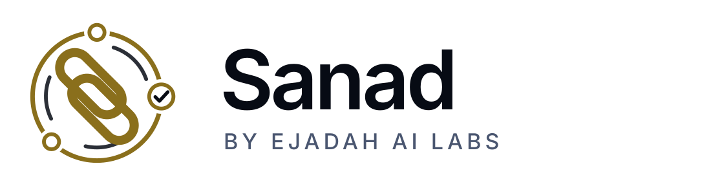

{{AUDIENCE, e.g. For safety and systems engineering leads}}{{EYEBROW, e.g. Engineering Intelligence Platform}}
{{LEDE — 2 sentences. What Sanad does for this reader, in their words. No banned words.}}
| Capability | In one line | Status |
|---|---|---|
| {{CAPABILITY}} | {{ONE_LINE}} | build in progress |
| {{CAPABILITY}} | {{ONE_LINE}} | planned |
{{LEFT_BODY — mention a real artefact, e.g. REQ-SYS-042}}
{{RIGHT_BODY}}
{{CTA_BODY}} — {{URL}}